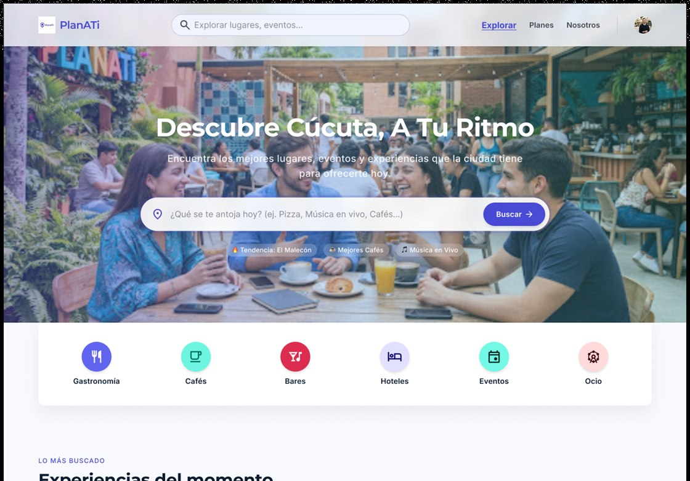
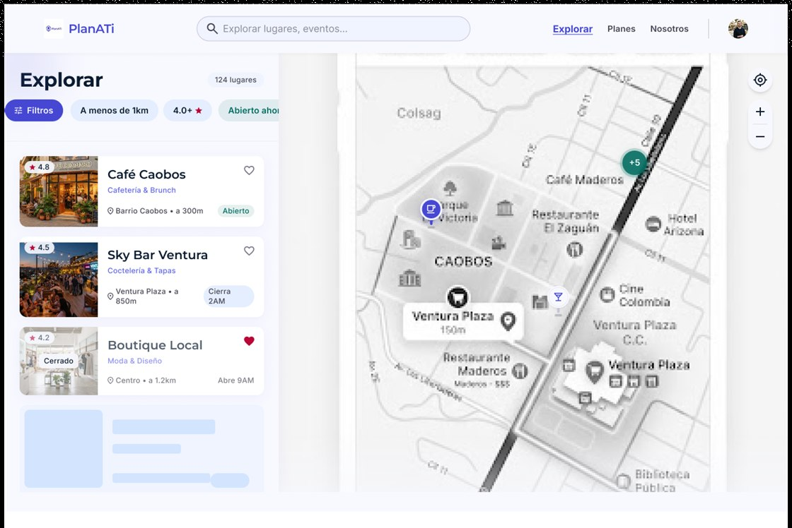
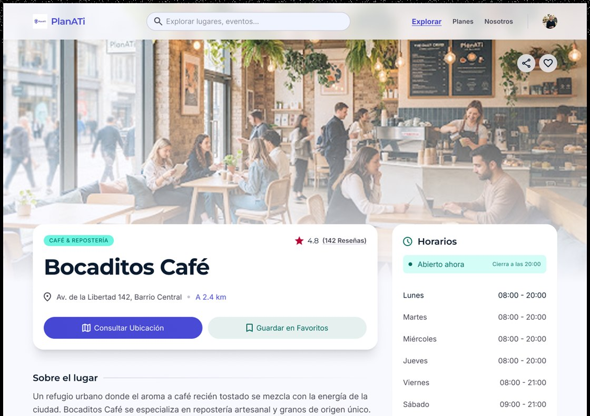
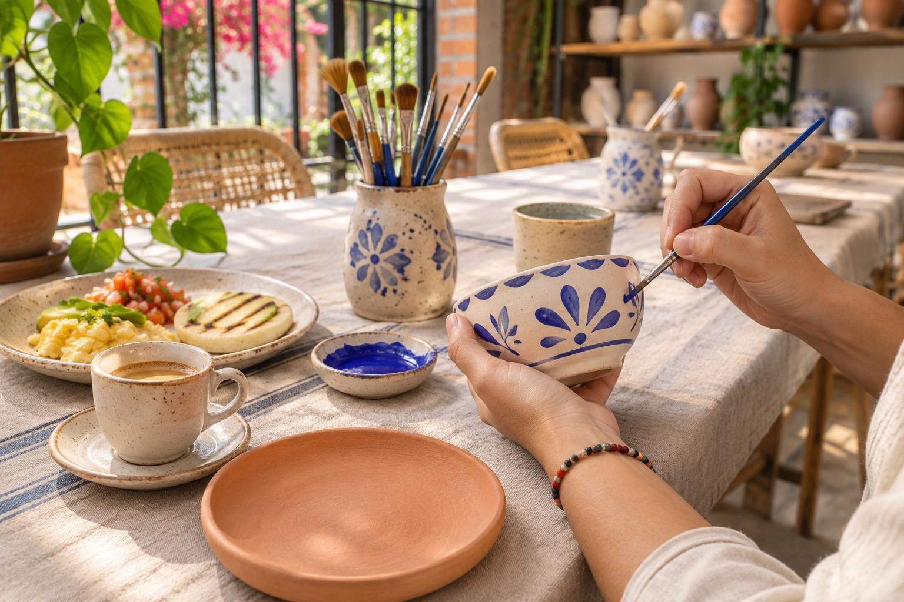

Cafés
Café Caobos
Café de origen y algo dulce para ponerse al día.
Cúcuta, Colombia
Encuentra cafés, actividades y lugares para salir en Cúcuta. Elige lo que te provoca y revisa dónde ir antes de salir.
Prototipo de aplicación web
Inicio
Busca lo que te provoca o empieza por una categoría. Encuentra opciones para un café, una salida con amigos o un plan de fin de semana.

Explorar
Filtra por categoría y ubica las opciones en Cúcuta. Mira qué lugares quedan cerca y cuál encaja con tu plan.

Detalle
Abre el lugar que te interesa y consulta sus horarios, ubicación y menú para decidir si te queda bien.

Explora Cúcuta
Elige una categoría y abre una ficha para probar cómo se encuentran planes en PlanATi.
Café de origen y algo dulce para ponerse al día.

Un brunch con un taller de pintura en cerámica.
Cócteles y tapas para salir con amigos por la noche.
Es una propuesta de aplicación web que reúne lugares, actividades y experiencias de Cúcuta en un solo sitio. Su objetivo es facilitar la búsqueda y dar visibilidad a los establecimientos locales.
En la demo de esta página puedes filtrar planes de ejemplo y abrir sus fichas. En el recorrido también puedes ver las pantallas del prototipo.
La propuesta contempla ubicación, horarios, menús, precios y reseñas para ayudarte a elegir un lugar.
Mira el video del prototipo, desde la búsqueda hasta la ficha del lugar.
Ver video del recorrido